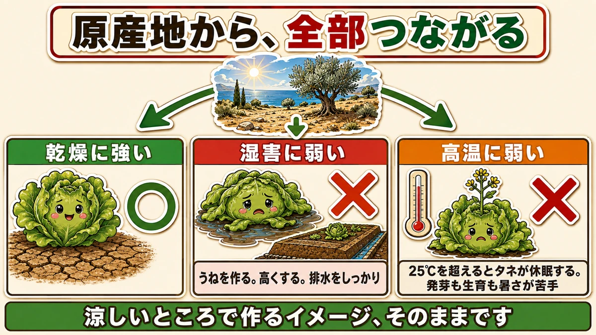
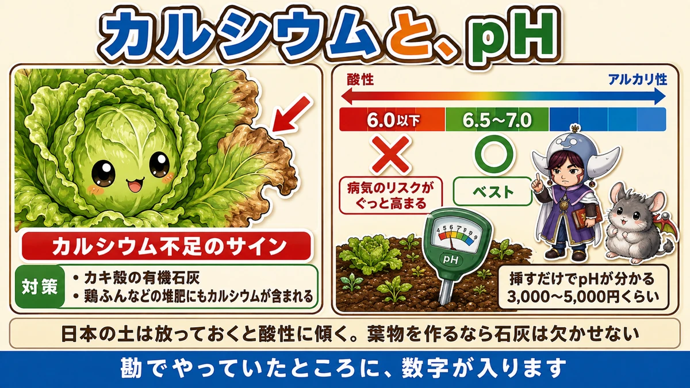
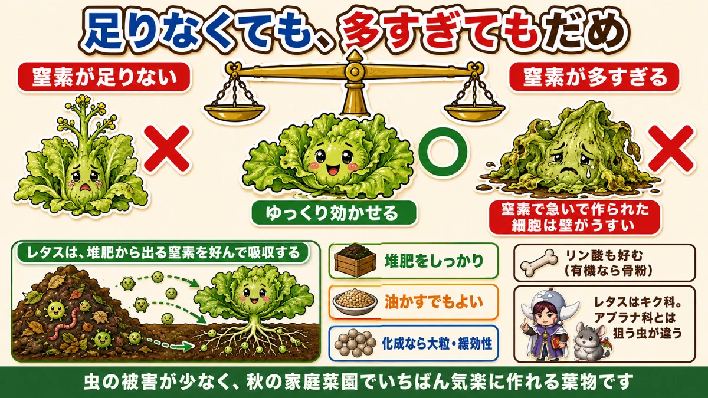

レタスは地中海の野菜です🥬 だから乾燥に強く、湿気に弱い

🥬「葉の先が枯れてくる」
🥬「途中で、とろけるように腐った」
🥬「すぐに花が咲いてしまう」
どうも、8150（えいこう）です🌱 家庭菜園歴8年、理科の教員免許を持っていて、有機・無農薬で野菜を育てています。
レタスは、虫がつきにくくて家庭菜園に向いた野菜です。でも★思わぬところでつまずきます。
先に、この記事でいちばん言いたいことを言っておきます。
★レタスは、地中海の野菜です。
これを知っていると、★対策がほとんど全部つながります☺️

★★原産地から、考える
地中海は、どんなところか
地中海沿岸を思い浮かべてみてください。
★夏は乾いていて、雨が少ない。★冬は雨が降るけれど、寒さは厳しくない。
そういう気候で育ってきた野菜です。
★乾燥に強く、湿気に弱い
だから、こうなります。
★レタスは、乾燥には強い。でも湿害には弱い。
湿害というのは、★湿気が多い、水はけが悪い、そういう環境で受ける害のことです。
★雨が続いたり、土に水がたまったりすると、病気や障害が出やすくなります。
★だから、うねを高くします
対策は単純です。
★うねを作る。そして★高くする。
★水はけの悪い畑なら、なおさらです。排水もしっかりやってください。
前に梅雨の記事で、★排水路と高うねの話をしました。★レタスは、その効果がいちばんはっきり出る野菜のひとつです。
★高温にも弱い
もうひとつ、原産地から分かることがあります。
★涼しいところで作るイメージがありますよね。★そのとおりです。暑さに弱い。
そして★高温だと、花芽が出ます。とう立ちです。
前にタネ袋の記事で、こうお伝えしました。
★レタスは25℃を超えると、タネが休眠して発芽しない。
★発芽だけでなく、生育でも同じです。★暑いのが苦手な野菜です。
だから★栽培時期をしっかり守ってください。★秋まきなら、9月に入ってからが安心です。
★★カルシウムが好きです
葉先が枯れたら、このサイン
レタスには、はっきりした好みがあります。
★カルシウムが足りないと、葉先が枯れます。

葉の先端が茶色くなって、パリパリになる。★これはカルシウム不足のサインです。
★石灰で補います
対策は、★カルシウムを多く含む石灰を入れることです。
前回、ほうれん草のところで★カキ殻の有機石灰を紹介しました。★レタスにもそのまま使えます。
★葉物野菜は、カルシウムが要る。そう覚えておいてください。
★堆肥にも入っています
もうひとつ手があります。
★堆肥にもカルシウムが含まれています。
とくに★鶏ふんはカルシウムが多いです。前に玉ねぎの止め肥の記事で、炭化鶏ふんの話をしました。★あのときも「カルシウムを含む」とお伝えしました。
★元肥に混ぜておくと、なおいいです。
★★pHは6.5から7.0
数字がはっきりしています
レタスには、目標とするpHがあります。
★6.5から7.0がベストです。
そして、★はっきりした境界線があります。
★★pHが6.0以下になると、病気のリスクがぐっと高まります。
日本の畑は、放っておくと酸性です
前にも何度かお伝えしました。
★雨が多い日本では、土は放っておくと酸性に傾きます。
つまり★何もしないと、6.0を割り込んでいきます。
★ほうれん草もレタスも、酸性に弱い。★葉物を作るなら、石灰は欠かせません。
★★測る道具があります
「pHなんて、どうやって知るのか」と思いますよね。
★土壌酸度計という道具があります。
- ★土に挿すだけで、pHが分かります
- ★3,000円から5,000円くらい
★1つ持っておくと、畑全体の目安になって便利です。
前にスコップの剣先が30cm、移植ごてが15cmという話をしました。★道具が定規になる、という話をいくつかしてきましたが、これは「見えないもの」を測る道具です。
★勘でやっていたところに、数字が入ります。
★★窒素は、ゆっくり効かせる
ここがレタスの難しいところです
肥料の話です。★レタスは、窒素の扱いが独特です。

★足りないと、花が咲きます
まず、少ない場合です。
★窒素が足りないと、花芽が出ます。
とう立ちですね。★高温でもとう立ちしますが、★肥料不足でもとう立ちします。
★育つ力がないと、「もう子孫を残そう」と切り替わってしまう。前に4月号でお話しした、あの仕組みと同じです。
★★多すぎると、とろけます
では、たくさんやればいいのか。
★逆です。
★窒素をやりすぎると、病害虫の原因になります。
そしてレタスには、★腐敗病という代表的な病気があります。
★名前のとおり、株がとろけていきます。★見ていてつらい病気です。
前に何度もお伝えしたとおり、★窒素で急いで作られた細胞は壁がうすい。★菌が入りやすくなります。
★★だから「ゆっくり効かせる」
足りなくてもだめ。多すぎてもだめ。
★答えは、ゆっくり効かせることです。
★レタスは、堆肥の窒素が好き
ここが面白いところです。
★レタスは、堆肥から出る窒素を好んで吸収するという特性があります。
窒素にもいろいろな形があって、★レタスは堆肥由来のものを好むんですね。
だから、こうします。
- ★堆肥をしっかり入れる
- ★油かすでもよい
- ★化成肥料を使うなら、★大粒・緩効性のものを
★ゆっくり出てくる形で入れておく。それがレタスに合っています。
リン酸も好みます
もうひとつ、★レタスはリン酸も好みます。
前に玉ねぎの止め肥の記事で、リン酸は★DNAの材料で、細胞膜を丈夫にするとお伝えしました。
★有機なら骨粉です。腐敗病を防ぐという意味でも、理にかなっています。
レタスが向いている理由
虫が少ない野菜です
最後に、いいところをお伝えします。
前に春の葉物の記事で、こうお伝えしました。
★レタスはもともと虫の被害が少ない野菜。★寒い時期はカビの病原菌も少ない。
前回のヨトウムシの話でも、キャベツと白菜が主役でした。★レタスは、あの厳しい戦いから外れています。
★アブラナ科ではありません
理由があります。
★レタスはキク科です。
キャベツ、白菜、ブロッコリー、大根、小松菜。★これらは全部アブラナ科で、同じ虫に狙われます。
★レタスだけ、仲間が違います。
前にコンパニオンプランツの記事で、★科が違うと事情が変わるという話をしました。★ここでもそれが効いています。
だから、初めての方にも
★虫の心配が少なく、育つのも早い。
★秋の家庭菜園で、いちばん気楽に作れる葉物だと思います。
土さえ整えておけば、あとは待つだけです。★そして土の整え方が、今日お話しした内容です。
原産地から、全部つながる
この記事の要点
- ★★レタスは地中海の野菜。★原産地を知ると対策が全部つながる
- ★乾燥には強いが、★湿害に弱い
- ★対策は、うねを作って高くする。★排水をしっかり
- ★高温に弱く、★暑いと花芽が出る（とう立ち）
- ★25℃を超えるとタネが休眠する。★発芽も生育も暑さが苦手
- ★★カルシウムが足りないと、葉先が枯れる
- ★カキ殻の有機石灰で補える。★葉物はカルシウムが要る
- ★鶏ふんなどの堆肥にもカルシウムが含まれる
- ★★pHは6.5〜7.0がベスト。★6.0以下で病気のリスクがぐっと高まる
- ★日本の土は放っておくと酸性に傾く
- ★★土壌酸度計は挿すだけ。3,000〜5,000円。★見えないものを測る道具
- ★★窒素が足りないと、とう立ちする
- ★★窒素が多すぎると、腐敗病（とろけていく病気）の原因になる
- ★答えは「ゆっくり効かせる」
- ★★レタスは堆肥から出る窒素を好んで吸収する
- ★堆肥をしっかり／油かすでもよい／化成なら大粒・緩効性
- ★リン酸も好む。有機なら骨粉
- ★レタスはキク科。★アブラナ科ではないので、狙う虫が違う
- ★虫の被害が少なく、秋の家庭菜園でいちばん気楽に作れる葉物
全部やろうとしなくて大丈夫です。まずは★うねを、いつもより少し高くしてみてください。地中海の野菜だと思い出せば、それだけで判断できます🥬
次回は、落花生の話。花が咲いたあとに、地面へ潜っていく不思議な野菜です🥜
ここまで読んでくださって、ありがとうございました。
レタスのタネ
地中海生まれの野菜です。乾燥には強く、湿気に弱いことを覚えておいてください。
![[商品価格に関しましては、リンクが作成された時点と現時点で情報が変更されている場合がございます。]](https://hbb.afl.rakuten.co.jp/hgb/56d217e1.4eab06f8.56d217e2.1513a8ec/?me_id=1204270&item_id=10000397&pc=https%3A%2F%2Fthumbnail.image.rakuten.co.jp%2F%400_mall%2Fnikkoseed%2Fcabinet%2Fgoq002%2F6479_1.jpg%3F_ex%3D240x240&s=240x240&t=picttext "[商品価格に関しましては、リンクが作成された時点と現時点で情報が変更されている場合がございます。]")

牛ふん堆肥
窒素は堆肥からゆっくり効かせます。化成肥料で一気に効かせると失敗します。

貝殻石灰
カルシウムが足りないと、葉の縁が茶色くなります。
![[商品価格に関しましては、リンクが作成された時点と現時点で情報が変更されている場合がございます。]](https://hbb.afl.rakuten.co.jp/hgb/56d21b6a.c19127f6.56d21b6b.c5473e84/?me_id=1258048&item_id=10000067&pc=https%3A%2F%2Fthumbnail.image.rakuten.co.jp%2F%400_mall%2Fkaneashop%2Fcabinet%2F12084383%2F12419790%2Fimgrc0108924525.jpg%3F_ex%3D240x240&s=240x240&t=picttext "[商品価格に関しましては、リンクが作成された時点と現時点で情報が変更されている場合がございます。]")
敷きわら
高うねにして、株元を覆う。湿気をためないのがいちばんの対策です。
![[商品価格に関しましては、リンクが作成された時点と現時点で情報が変更されている場合がございます。]](https://hbb.afl.rakuten.co.jp/hgb/56bc2fb2.ff40a6e6.56bc2fb3.618f6a70/?me_id=1257026&item_id=10000211&pc=https%3A%2F%2Fthumbnail.image.rakuten.co.jp%2F%400_mall%2Fsharuka%2Fcabinet%2F09042254%2Fimgrc0081094692.jpg%3F_ex%3D240x240&s=240x240&t=picttext "[商品価格に関しましては、リンクが作成された時点と現時点で情報が変更されている場合がございます。]")
あわせて読みたい